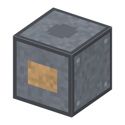

説明
①子ども 回る砥石で、硬い鋼を少しずつ削って正確な形に仕上げる機械。
②学生 鋼×6＋砥石＋モーター＋銅ケーブル。電気 1kW・20秒。焼入れした鋼球＋砥石＋測る道具 → マイクロメータなら研削した鋼球、ゲージブロックならそろえた鋼球（測る道具と砥石は減らない）。
③大人 焼入れした鋼は旋盤の刃では削れない。1876年、ブラウン＆シャープ社が万能研削盤を作り、1883年にはドイツのフィッシャーが鋼の球を同じ大きさの真球に研削する機械を作った。
④ガチ 砥石の硬い粒が、刃物の代わりにほんの少しずつ削る。1000分の1mm の正確さで仕上げられる。砥石の粒は天然のエメリーから、人造のアルミナ・炭化ケイ素に変わった。
作り方
使い道
（このアイテムを使うレシピは無い）